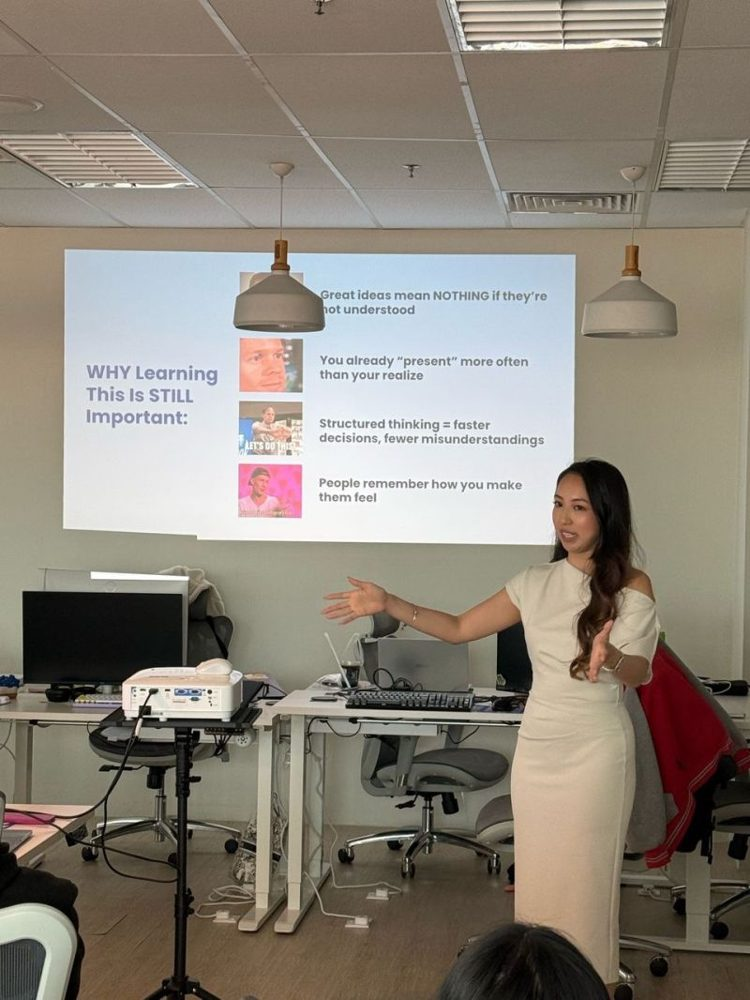
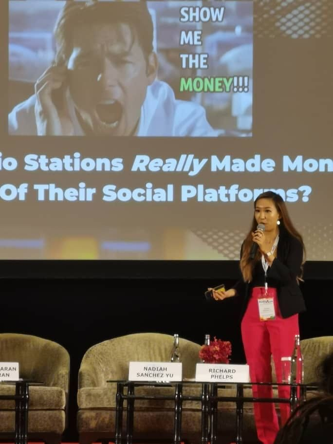
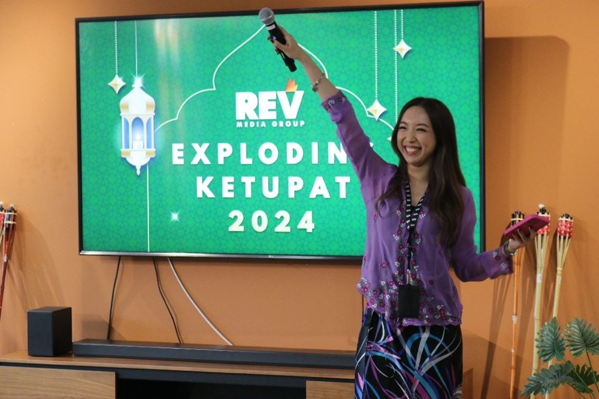

From RM1.07M closed in 2020 to RM4.56M gross by 2022, plus a new content product.
→
2023
Senior Strategy Planner
Led a trilingual campaign reaching 2M unique Malaysians and built RM7M of Ramadan–Raya packages.
→
2024 – now
Lead Strategy Planner
Leads the team, contributes about 73% of YoY direct revenue and built the Fresh Events Asia partnership for digital + on-ground campaigns.
2020
RM1.07M from 13 confirmed campaigns, and 3.2M validated during Exploding Content week.
2021
About 4M in revenue across 52 campaigns, plus industry initiative decks for property, snacks and feminine care.
2022
RM4.56M gross with proposals, and RM3.4M of Exploding Content commitments from four property clients.
2023
Silver for IKEA at the MDA d'Awards, and two of three rooms sold in the first festive CNY Immersive Arena.
2024
RM225K from new clients via a three-language financial literacy campaign. Ramadan–Raya drove 28% of total revenue.
2025
EcoWorld Branding Forum, the LUMI sharing session and the Proposal Masterclass for the strategy team.
2026
Rising Star at the MDA d'Awards, and a partnership I initiated with Fresh Events Asia, a fitness event IP. Its digital + on-ground packages unlocked RM30K in revenue within five months of launch.
Leading & speaking

Coaching the team through the Ultimate Proposal Masterclass, now part of department onboarding.

On stage at Radiodays Asia, asking how media owners really make money from social.

Exploding Ketupat 2024, pitched to the team in full festive energy.
Malaysian Digital Association (MDA) d'Awards 2026. REV won three Golds and four Silvers across digital publishing, content agency, growth campaigns and AI innovation.
What it means Gross revenue from Ramadan–Raya packages was RM7.07M in 2022, RM8.35M in 2023 (+18%) and RM7.09M in 2024 (−15%). Net revenue was RM6.93M, RM7.07M and RM6.08M.
Benchmark Industry digital ad spend for Ramadan–Raya rose about 5% in 2023, then fell about 32% in 2024 as advertisers stayed cautious during the height of the Gaza conflict. Indexed to 2022, REV finished 2024 level while the industry sat near 71.
So what: REV grew nearly four times faster than the market in 2023 and lost less than half as much in 2024, which is why RM7.1M is a strong result even though it is below 2023. Ramadan–Raya was 28% of REV's total 2024 revenue.
Sources: REV revenue tracking and industry digital ADEX. ADEX excludes branded content and sponsorships, so read this as a directional benchmark, not market share. Industry figures are rounded.
2M unique Malaysians · 4M+ total reach
What it means 2M unique Malaysians were reached across English (SAYS), Malay (Vocket) and Mandarin (Tantannews) content.
Benchmark 4M+ is total reach and includes people who saw content more than once, across languages and platforms. Unique reach is the stricter number, so it leads.
Also: 2.3M video views on FB and IG, 53K views on the Cakna Duit podcast and RM225K from new clients.
Source: campaign reporting, 2024.
6.4M reach · +237% engagement
What it means 6.4M total reach. Brand engagement rose from 11.5M (May to July) to 38.8M (August to October 2025).
Benchmark Compared with the period before launch.
Source: Meltwater.
+2,133% engagement rate
What it means Instagram Reel engagement rate of 2.34%, with 300 seeders igniting shares.
Benchmark 0.11% is the average for sponsored gadget and electronics Reels.
Source: campaign reporting, May 2025.
+6,061% TikTok engagement
What it means TikTok engagement rate of 19.10% across a 7.6M reach campaign.
Benchmark 0.31% is the average across FMCG drinks on TikTok.
Source: campaign reporting, April 2026.
13% → 33% share of voice
What it means Share of AI answers to unbranded prompts rose from 13% to 33% between 17 May and 12 July, moving Corvan from #5 to #2. Prompt mentions rose from 9 to 24 after 30 articles.
Benchmark Tracked fortnightly against Dyson, Tineco and Dreame.
Source: REV GEO tracking.
RM3.4M · ~73%
What it means RM3.4M of Exploding Content commitments were validated from four property clients in 2022. ~73% is the share of REV's YoY direct revenue I contributed across 2024 and 2025.